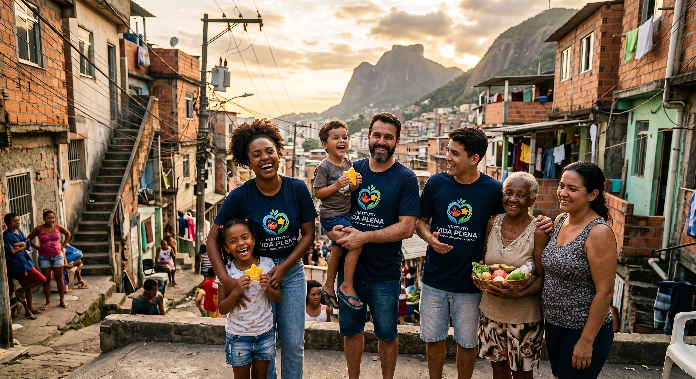

INSTITUTO VIDA PLENA
Dignidade, cuidado e esperança onde a urgência não pode esperar
No Instituto Vida Plena, atuamos diretamente nas ruas e comunidades para combater a fome, levar alegria à infância e viabilizar tratamentos de saúde essenciais. Acreditamos que a solidariedade só é transformadora quando chega com agilidade a quem mais precisa.
Quem Somos

O Instituto Vida Plena é uma organização sem fins lucrativos nascida da certeza de que ninguém deve enfrentar a fome, a doença ou o desamparo em silêncio. Atuamos como uma ponte direta entre pessoas dispostas a ajudar e famílias ou indivíduos em situação de extrema vulnerabilidade social.
Nossa atuação foca no alívio de necessidades humanas imediatas e urgentes. Não medimos esforços para que a dignidade seja devolvida a cada pessoa atendida, seja por meio de um prato de comida quente entregue na calçada, de um brinquedo que devolve o direito de sorrir a uma criança, ou do recurso financeiro que torna viável um tratamento de saúde inadiável.
Nossos Três Eixos de Ação
Alimentação Solidária
Realizamos rondas regulares de distribuição de refeições balanceadas, água potável e kits de higiene para a população em situação de rua. Nosso foco é suprir a fome imediata oferecendo escuta, respeito e acolhimento humano.
Infância & Alegria
Arrecadamos e distribuímos brinquedos novos e reformados para crianças que vivem em comunidades periféricas e abrigos. O ato de brincar é fundamental para o desenvolvimento saudável; por isso, garantimos que datas comemorativas e momentos difíceis sejam iluminados por afeto e imaginação.
Fundo de Apoio à Saúde
Mobilizamos recursos financeiros emergenciais para custear exames complexos, medicamentos de alto custo, insumos ortopédicos e intervenções cirúrgicas de pessoas sem condições financeiras e que não podem aguardar o tempo das filas convencionais.
Transparência e Transformação
Cada refeição servida, brinquedo entregue e tratamento financiado é fruto do engajamento de uma rede de voluntários e doadores que confiam no nosso trabalho. Todas as contribuições têm destino rastreável e impacto comprovado através de relatórios abertos e prestação contínua de contas.
Junte-se ao Instituto Vida Plena: transformar vidas exige presença, e cada gesto conta.